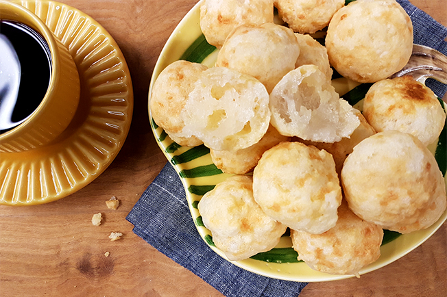
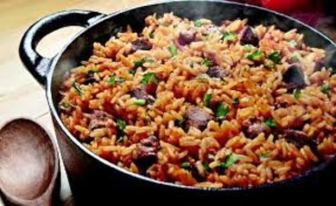

1 pound carne seca or other salted cured beef, soaked overnight and cubed
1 pound baby back spareribs, cut into individual ribs
1 pound black beans
10 cups water
4 cups collared or kale greens, sauteed in olive oil
4 cups cooked white rice
Directions
In a large heavy-bottom saucepan, over medium heat, add the oil.
When the oil is hot, add the onions and garlic. Crush the bay leaves and add to the pan.
Season with salt and pepper. Saute for 5 minutes. Add sausage. Continue to cook for 4 minutes.
Add the cubed beef, ribs, beans and water. Bring the liquid to a boil, reduce the heat to medium
low and simmer until the beans are tender, about 2 1/2 hours. Adding water as necessary to keep
the beans covered. Using the back of a ladle, mash 1/4 of the beans. Reasons with salt and pepper if nedded
To serve, spoon some of the freens and ricce onto each serving plate. Spoon the Feijoada over the rice.
Shake some of the hot sauce over the entire plate. Garnish with the orange slices and farofa

Pão de queijo
Cheese Bread
Ingredients
3 cups tapioca flour
1 cup grated Asiago cheese
1 cup of Milk
1 cup vegetable oil, plus for oiling the pan
1 tablespoon salt
1 teaspoon minced garlic
3 eggs
Directions
First you are going to need a 48-cup mini muffin pan for the shape of the bread.
Preheat the oven to 400 defrees F.Grease a 48-cup mini muffin pan with vegetable oil.
In a food processor, combine the tapioca flour, Asiago, milk, vegetable oil, salt, garlic and eggs.
Process for 2 minutes, scraping down the sides of the bowl as needed. Fill each mini muffin cup with 1
tablespoon of the mixture. Bake for 12 to 14 minutes, then remove from the oven and let stand for 2 minutes.
Remove the Pão de queijo from the muffin pan and enjoy.

Carreteiro-Rice
Wagoners’ Rice
Ingredients
4 cups (760 g) uncooked jasmine rice or parboiled rice
2 thick slices bacon, chopped or cubed
3 tablespoons (45 ml) olive oil
4 cups (approximately 1⁄2 kilo) chopped or cubed leftover grilled beef,
preferably with some char marks and fat (dried beef can also be used)
4 cloves garlic, smashed
1 medium onion, chopped
1⁄2 cup chopped green onions, green and white parts
Dash of crushed red pepper
1–2 cubes beef bouillon
6 cups hot water, plus more as needed
Salt
Fresh Italian parsley, chopped, for garnish
Grated Parmesan, for garnish
Directions
If using jasmine rice, prior to cooking, rinse the dry rice with water in a mixing bowl,
straining the water until it runs clear to remove any excessive starch. Drain well and reserve.
Render the bacon in the oil in a 4- to 6-quart cast-iron pot or Dutch oven over medium-high heat
until golden brown. Add the beef, garlic, and onion, and sauté for 2 minutes, stirring constantly.
Stir in the rice and sauté for 2 minutes, then add green onions, red pepper, beef bouillon, and water;
add salt if needed. Bring to a boil and then reduce the heat to low. Cover and simmer for about
20 minutes, or until the rice has absorbed the water. If the water has been completely absorbed but
the rice is still undercooked, add a bit more water and allow it to cook a little longer.
When the rice is cooked, turn off the heat and gently stir it with a spoon so that all the ingredients
are well mixed. Cover the pot with a clean kitchen towel and let it rest for 2 to 3 minutes.
Just before serving, garnish the rice with the parsley and Parmesan
If you remove the lid and allow the rice to cook for 5 to 7 minutes at a low temperature,
the bottom of the rice will form a nice crust that is extremely flavorful.
To create the crust without burning the dish, it is imperative to use a heavy cast-iron pot